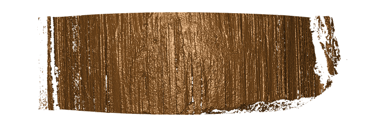

The goal of the DS401 R package is to assess quality of 3d topographics scans in form of x3p images.
Installation
You can install the development version of DS401 from GitHub with:
# install.packages("devtools")
devtools::install_github("heike/DS401")Example

This scan is about as good as we can hope for
x3p_image(fau001_ba_l1, file = "man/figures/fau001_ba_l1.png")
The DS401 package combines a set of functions assessing the quality of scans.
Feature extracted
Overall number of missing values
extract_na calculates the percentage of values that are missing in the surface matrix of the scan. For the scans shown above, the percentages are quite high for the bad scan and low for the good scan
extract_na(fau277_bb_l2)
#> [1] 38.26887
extract_na(fau001_ba_l1)
#> [1] 13.83538col_na Function
The col_na function’s goal is to distinguish between good and bad scans based on the proportion of columns with large proportions of missing values. It takes in three parameters, which are an x3p object, a percentage to be used as the number acceptable percentage of missing values in a column, and the proportion that bad columns that is the threshold for a good scan.
assess_col_na(fau277_bb_l2)
#> [1] 4.716293
assess_col_na(fau001_ba_l1)
#> [1] 0.8625219Assess Median NA Proportion
‘assess_median_na_proportion’ calculates the median proportion of NA values present in the middle of a 3d scan from a specific number of different y values. Specifically this variable is calculating the amount of feathering occuring in the 3d scans.
assess_median_na_proportion(fau277_bb_l2)# This scan seems to have a problem with feathering
#> [1] 0.08906883
assess_median_na_proportion(fau001_ba_l1)# good scan
#> [1] 0.001310616Assess Bottom Empty
assess_bottomempty(fau277_bb_l2)
#> [1] 95.20528
assess_bottomempty(fau001_ba_l1)
#> [1] 22.90831Assess Middle NA Proportion
assess_middle_na_proportion(fau277_bb_l2)
#> [1] 0.316787
assess_middle_na_proportion(fau001_ba_l1)
#> [1] 0.02565556Assess Percentile NA Proportion
assess_percentile_na_proportion(fau277_bb_l2)
#> [1] 0.7013605
assess_percentile_na_proportion(fau001_ba_l1)
#> [1] 0.00244798Assess Rotation
assess_rotation(fau277_bb_l2)
#> [1] 1.720705
assess_rotation(fau001_ba_l1)
#> [1] 1.098612Extract Median NA Proportion
extract_median_na_proportion(fau277_bb_l2)
#> [1] 0.08906883
extract_median_na_proportion(fau001_ba_l1)
#> [1] 0.001310616Predictions
predict_quality(list(fau277_bb_l2, fau001_ba_l1), c(1,1))
#> Loading required package: randomForest
#> randomForest 4.7-1
#> Type rfNews() to see new features/changes/bug fixes.
#> # A tibble: 2 × 11
#> x3p x3pname quality_pred quality_type assess_percentile_n… assess_col_na
#> <I<list>> <dbl> <dbl> <chr> <dbl> <dbl>
#> 1 <x3p> 1 0.85 good 0.0891 4.72
#> 2 <x3p> 1 0.906 good 0.00131 0.863
#> # … with 5 more variables: extract_na <dbl>, assess_middle_na_proportion <dbl>,
#> # assess_rotation <dbl>, assess_bottomempty <dbl>, lighting_protocol <fct>